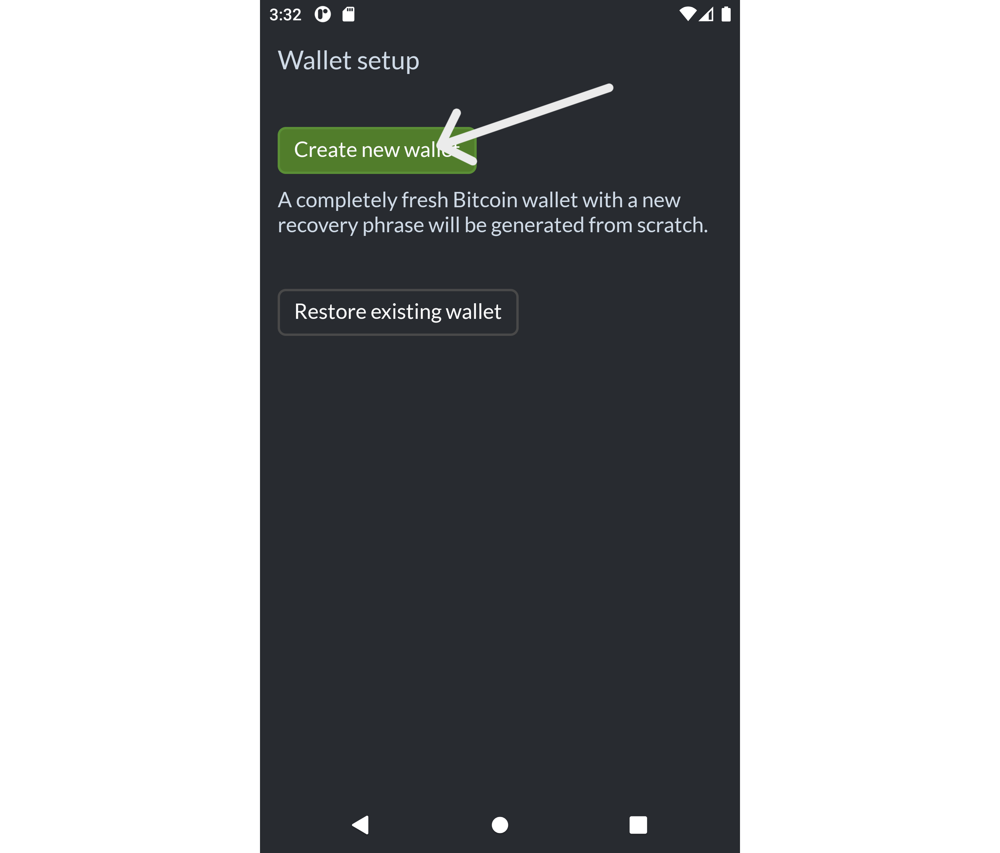
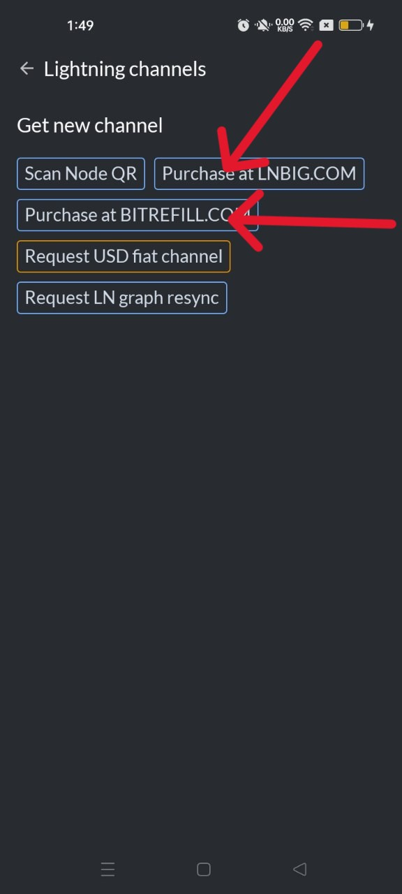
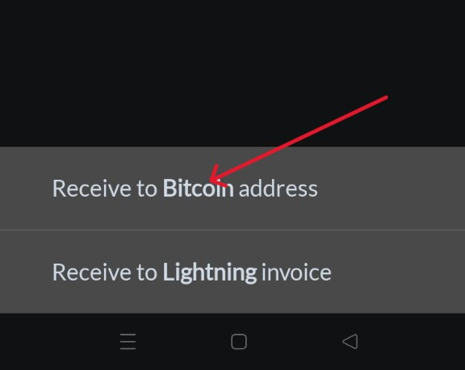
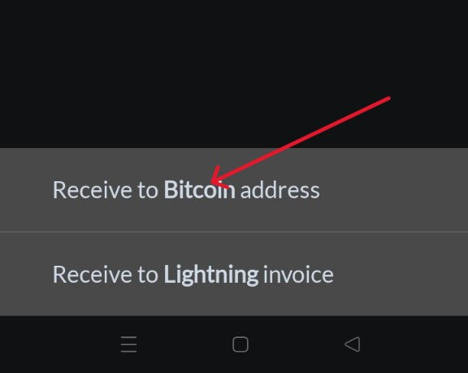
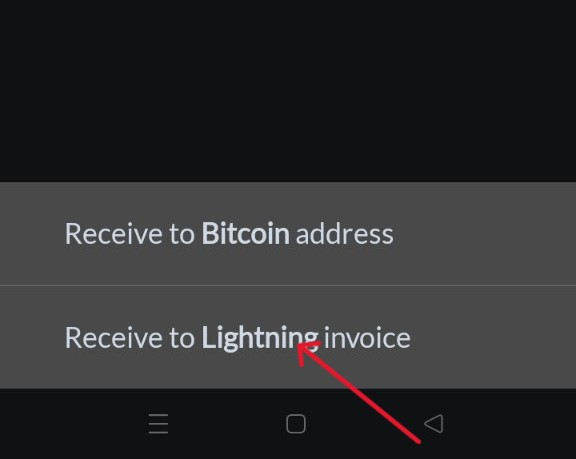

Valet App Documentation
Welcome to Valet — your self-custodial Bitcoin and Lightning wallet built for real-world, stable, and private transactions.
Introduction
Valet is a mobile Bitcoin wallet that empowers you to hold and spend Bitcoin without third-party involvement. It was designed for beginners and advanced users — offering mobile Lightning node integration, privacy-focused features, and some advanced, flexible controls, all on your palm.
Key Features:
- NON-CUSTODIAL
- INTEGRATED LIGHTNING NODE
- HARDWARE WALLET SUPPORT
- CONNECT TO PRIVATE ELECTRUM SERVER
- ADVANCED TOOLS - BATCHING & COIN CONTROL
- "HOLD" LIGHTNING INVOICES
New to Bitcoin? No worries. This guide will walk you through everything you need to know to use Valet today.
Getting Started
Step 1: Download & Install Valet
- Android devices only - Click here to download or download from FDroid
- Tap on Install to install the app.
- Go back to your home screen and open the app after installation.
Requirements - Valet is a lightweight application that consumes small memory resources on your mobile device.
- Android Version = 8.0 or higher
- Storage space = 30 mb space.
Step 2: Create Your Wallet
- Tap on the Vallet app on your homescreen to launch.
- Tap Create New Wallet—As soon as you tap on "Create New Wallet," a new home screen will appear. It is that fast and simple to create a wallet.
- Write down your 12-word recovery phrase - On the homescreen, you'll see a short message in a green card: "Tap to save your recovery phrase…". Click on that card and write down the 12 words in order, from left to right, with the word at the top left position as number 1.

What is the 12-word recovery phrase?
The Valet wallet is a non-custodial Bitcoin wallet. The term non-custodial or self-custodial means that you don't rely on any company/third party to protect your wallet and prevent unauthorized access. Also, you can do whatever you want with your wallet and the funds in it. So, with Valet, you have full control of your wallet's private keys represented by a random 12 English phrase, which gives access to your wallet and all the funds in it.
- This phrase is your wallet backup.
- Do not share or store it online. You're to write it down and keep it in a safe and secure place.
- Confirm the phrase to complete the setup - After writing down your 12 phrase keys, verify that you copied them correctly by entering them in the space provided on the app.
- Set a wallet PIN - This is optional, but recommended to prevent anyone from accessing your wallet if they get your device. (You can do this from the "Settings" page. Keep reading to learn how to set up a PIN for your app.)
Tip: Losing your recovery phrase means losing your Bitcoin. Keep it safe!
Step 3: Opening A Lightning Channel
Opening a Lightning channel is faster and easier when you have Bitcoin in your wallet. However, you can still open a Lightning channel from your node/wallet to another Lightning node even if you don't have any Bitcoins in your wallet.
There are several ways you can open a lightning channel on Valet.
- Buy from LNBig
- Buy from Bitrefill
- Manual channel opening.
This method is relatively more straightforward. On your home screen
- On the homescreen, tap on Lightning
- Select any of the options "Purchase at LNBIG.com" or "Purchase at BITREFILL.COM"
- You'll be redirected to your browser, where you'll complete the remaining process, and an Inbound Channel will be opened to your node.

Tip: In the Lightning Technology, there's something called "Inbound Liquidity Capacity" and "Outbound Liquidity Capacity". This means the amount of Sats you can receive at your lightning node and the amount you can send out of your lightning node, respectively.
Since you do not currently have any Bitcoin in your wallet, you can only create inbound channels.
Manual Channel Opening:
As the name implies, this process involves opening a channel to another known Lightning Bitcoin node manually. Just follow the few steps below:
- On your home screen, tap on Lightning.
- Select "Scan Node QR" and scan. - At this point, you should have requested and gotten the QR code of the node you want to open a channel to.
- Click "Share Node ID" to share your node ID with the person you're opening the channel with.
- Please, REMAIN on the same screen until the node connection has been established - You will get a prompt when the connection has been established.
- Congratulations, you have an inbound channel ready to receive Sats.
Step 4: Receiving Bitcoin
Now that you have successfully opened a lightning channel with another node, either manually or via a purchase from LNBig or BitRefill, you're set to receive Bitcoin in Valet.
You can receive Bitcoins into your wallet either through Lightning or through the usual On-Chain wallet. On the home screen, you can either click on the orange Bitcoin card or the purple Lightning card, OR you can also access both options by clicking the Receive button at the bottom.
1. Steps to receive Bitcoin On-Chain:
- On the home screen, click on the "orange Bitcoin" card.
- With the "Edit" button, you can insert the amount of Bitcoin you'll receive to that address. This is usually important as it makes payment easy since the amount is already filled out.
- Copy the address and send it to the person you're receiving the Bitcoin from, or click on the share button to share the address through other means. You can also send a screenshot of the QR code to the other party, as this can be scanned to make a payment.
- You can also generate an address by clicking on "Receive" on the home screen and selecting "Receive to Bitcoin address."
- Click "More Fresh Addresses" to generate a new and different address.
 

2. Receive Bitcoin through Lightning:
You remember that you opened a channel, and it was an inbound channel. This means that you can receive Bitcoins/Sats. Follow these steps below:
- Click the "Receive" button at the bottom of the home screen
- Select "Receive to Lightning Invoice"
- Click "Edit" to enter the amount of Bitcoin to be received, or you can proceed to generate the invoice without inputting an amount.
- Copy or share the invoice with the other party. You can also share the screenshot of the QR code.
Tip: You can generate as many Bitcoin addresses or invoices as possible. Lightning invoices usually have an expiry time of 24 hours. When it expires, it can't be paid again.

Step 5: Sending Bitcoin
Sending Bitcoin is easy. You need to have Bitcoins or Sats in your wallet, and you can send them to anybody.
Note: If you receive Bitcoin into your normal on-chain wallet, it stays in your on-chain balance, and if you receive Bitcoin through a Lightning channel, it stays in your Lightning balance. This means you cannot use the Bitcoin on your on-chain balance for a Lightning transaction and vice versa.
Sending Bitcoin On Lightning:
To send Bitcoin on the Lightning network through your Lightning channel, you need to have "Outbound liquidity," as we mentioned earlier. If you click the "purple Lightning card" on the home screen, you will see "inbound and outbound capacity". Without outbound capacity, you cannot make payments from your Lightning channel. However, you can only send the amount of Sats shown in your outbound capacity.
You can increase your outbound capacity by receiving more sats to that channel you opened, or by opening a new channel with the same node and increasing its outbound liquidity.
So when you have an outbound liquidity, you can send Sats across Lightning following these few steps:
- On the home screen, click on "Send."
- Copy and paste the Lightning invoice address.
- Enter the amount of sats (in a situation where the invoice does not already have an amount attached)
- Send Sats. Fees will be deducted alongside the amount sent.
Sending Bitcoin on-chain:
All you need to send Bitcoin on-chain is a sufficient balance in your wallet. Then proceed with these few steps
- On the home screen, click on "Send."
- Paste the Bitcoin address and press "OK."
- Enter the amount in Dollars or satoshi
- Choose a fee rate. - While sending Bitcoin on-chain, you can choose the fee you want to pay for your transaction. You can adjust this from the green "fee rate" button
- Broadcast your payment and sign it.
Tip: You can send Bitcoin via Lightning or on-chain by scanning an on-chain wallet address QR code or the QR code of a Lightning invoice.
On-chain Bitcoin transactions may be costlier in fees and take a longer time to get confirmed, while Lightning Bitcoin transactions are usually cheaper (a couple of sats) and faster (split seconds). You can learn more about Bitcoin transactions
here
Make sure the network type (Lightning vs On-chain) matches the recipient!
Wallet Settings
You can access the settings feature by clicking the "gear icon" in the top right corner of your homescreen.
- Local Channel Backup — This is always automatically set to "Enabled"; however, if it is disabled, kindly set it to "Enabled". This backup helps restore your Lightning Channel states if you uninstall your wallet or lose your device.
- Where to store local Backup — This is always set to your download folder. It is important to assign this to any folder of your choice that you'll remember, because this is where the wallet backup files will be saved, and it'd be handy when you next want to recover your wallet on your mobile.
- Manage Chain wallet — This is automatically set to "BIP84 Modern Wallet". You can leave it there.
- Add Hardware Wallet — Hardware wallets are physical Bitcoin wallets that may exist as a USB drive or specialized devices designed to store Bitcoin. If you have one, you can link these devices to your Valet wallet in a Watch-Only mode, creating an extra layer of safety. Just scan the wallet and follow the prompts.
- Set Custom Electrum Node — By default, your wallet will be connected to random Electrum nodes, but through this setting, you can connect to private Electrum servers (if you have any) for easy on-chain Bitcoin blockchain access. Electrum servers are servers that intermediate between Electrum wallets and the Bitcoin network, removing the hurdles of downloading and syncing the full blockchain. More on electrum servers here
- Fiat Currency — This is the local currency your balance is shown. It is set to USD by default. However, Valet supports a few popular local currencies like the US Dollar, the British Pound Sterling, the Euro, the Japanese Yen, and others.
- Bitcoin Units — This is the format in which your Bitcoin balance will be displayed. There are two formats: the Satoshi (SAT) and Bitcoin (BTC).
- Use Pin Authentication — This is a security feature that helps protect your mobile wallet application from unauthorized access. You can choose to use a PIN or your fingerprint (if your device has fingerprint technology)
- Use Tor Connection — Although Valet doesn't work with Tor natively, it is possible to use it along with the popular Orbot app, working as a VPN or Tor proxy on the smartphone.
- View BIP Recovery Phrase — This is where you can view and copy your 12-phrase keys to recover your wallet if you uninstall the Valet app or lose your device. Also note that with the 12-phrase keys, you can recover your wallet on any other Bitcoin wallet application. So, it doesn't necessarily have to be Valet, however, you may not get the same features you get in Valet on other applications.
- Usage Statistics — You can view the number of people who trust and use Valet for its robustness and flexible features.
Advanced Features
- Coin Control — Coin control lets you choose which UTXO to spend from. In layman's terms, a UTXO could be likened to different pockets that hold different amounts in a particular wallet, which collectively make up the balance of that wallet. So with coin control in Valet, when you want to send Bitcoin to someone, you can choose which pocket in your wallet to send from
- Batching — Batching is a feature that helps reduce the transaction fees paid for Bitcoin transactions. Naturally, every Bitcoin transaction carries a transaction fee, which is often dependent on the size of the transaction data and not necessarily the amount transacted. Hence, batching reduces the fees paid by grouping transactions with small data size to those with similar data size and broadcasting them as one transaction, thereby paying one fee or a structurally reduced fee for both transactions.
- Integrated Lightning Node — The Lightning Technology is a second-layer Bitcoin network that helps Bitcoin scale. It was designed to facilitate faster and micro Bitcoin transactions on top of the Bitcoin main Blockchain. Read more about Lightning Network (here)
Security Tips
- Store 12-Phrase Key Offline — Your 12-phrase keys are your ultimate access to your wallet in the event of a loss of your device or uninstallation of your Valet app. Please write it down on paper and keep it securely. Do not save it in your Email Draft Box or on your computer or any electronic device, as these things are susceptible to security breaches.
- Do Not Share Your 12-Phrase Keys — Do not give your 12-phrase keys to anyone. Developers of Valet will never ask you for your 12-phrase keys. Do not enter it on any website or forum. Anybody who gets your 12-phrase keys will take control of your wallet and drain your Bitcoins.
- Check for App Updates — Always check for app updates so you don't miss out on patches and bug fixes.
Contribute & Support
Test or Suggest Features:
Please visit our GitHub page and feel free to fork the code base to your taste, submit bug reports, open feature requests, and join roadmap discussions.
We are always open to getting your feedback. Kindly follow us on X, Stacker News and Telegram and join us in spreading the word.
Donate:
We have come a long way, but there are a lot of other outstanding features we would want to introduce in the future. So the building never stops, hence, your financial support means a lot to us. Please support Valet's development on Geyser
FAQ
Q: Can I use Valet without an internet connection?
A: No, you cannot use Valet without an internet connection. However, Valet was purposely built to use a minimal internet connection, making it suitable for users in remote areas with low internet bandwidth and latency.
Q: Can I restore my wallet on another phone?
A: Yes — with your 12-word recovery phrase, you can restore your wallet on any other device, including desktop wallets that support mnemonic key wallets
Q: What happens if I uninstall Valet?
A: Your wallet is safe as long as you copied down your 12-phrase keys and kept them safe.